Optimization of Dirichlet Eigenvalues under Perimeter Constraint
To a bounded open set $\Omega\subset \Bbb{R}^N$ we can associate the eigenvalues $$ 0<\lambda_1(\Omega) \leq \lambda_2(\Omega) \leq \cdots \to \infty$$ of the Dirichlet Laplace operator. They are solutions of the eigenvalue problem $$ \begin{cases} -\Delta u = \lambda u \\ u \in H_0^1(\Omega) \end{cases}.$$ Note that the Dirichlet spectrum can be defined whenever the injection $H_0^1(\Omega)\hookrightarrow L^2(\Omega)$ is compact.
The Dirichlet eigenvalues admit the following variational characterization: $$ \lambda_k(\Omega) = \min_{S_k} \max_{u \in S_k} \frac{\int_\Omega |\nabla u|^2 }{\int_\Omega u^2},$$ where the minimum is taken over all $k$ dimensional subspaces $S_k \subset H_0^1(\Omega)$. This allows us to see immediately that the eigenvalues scale well under homotheties: $\lambda_k(t\Omega)=\frac{1}{t^2}\lambda_k(\Omega)$. Furthermore, $\lambda_k$ is decreasing with respect to set inclusion.
In general, little is known regarding the shape which optimizes $\lambda_k$ for $k \geq 3$. It is known that in the case of a volume constraint, the ball minimizes $\lambda_1(\Omega)$ and two equal balls minimize $\lambda_2(\Omega)$. For $k \geq 3$ we do not know analytically which shapes are optimizers. This fact motivated some numerical computations made initially by Edouard Oudet, and more recently by P. Antunes, P. Freitas. They searched the optimal shape which minimizes $\lambda_k(\Omega)$ for $k\in\{3,4,5,...,15\}$. One striking open problem is to prove that the disk minimizes $\lambda_3(\Omega)$. Although numerical evidence exists for more than a decade, no analytical proof of this fact exists. It is known that the disk is a local minimizer for $k=3$. Recently, Amandine Berger proved that the only values of $k$ for which the disk can be a local minimizer for $\lambda_k$, in the case of the volume constraint, are $k=1,3$.
More recently, a perimeter constraint was considered by B. Velichkov and G. de Philippis. They proved that optimal shapes exist, they are bounded, connected and have boundary of regularity $C^{1,\alpha}$. In this case, it is straightforward to see that the ball minimizes $\lambda_1$. All we need to do is combine the result for the volume constraint with the isoperimetric inequality. Note that optimizing $\lambda_k(\Omega)$ under a perimeter constraint is equivalent (up to a homothety) to minimizing $$ \lambda_k(\Omega)+Per(\Omega).$$ For $k=2$ we do not know the exact form of the optimal shape. D. Bucur, A. Henrot and G. Buttazzo proved that the optimal shape has regularity $C^\infty$, and does not contain segments or arcs of circles in its boundary.
This motivates the numerical search of optimal shapes in the case of the perimeter constraint. One way to approach this problem in two dimensions is to parametrize the optimal shape by its radial function. Note that optimal shapes are necessarily convex. Indeed, convexification decreases $\lambda_k$, and (only in two dimension) also decreases the perimeter. Convex shapes are representable in radial form. Another step is to approximate the radial function by a truncation of its Fourier series: $$ \rho(\theta) = a_0+\sum_{k=1}^n a_k \cos k\theta +\sum_{k=1}^n \sin k\theta.$$ At this point, it is possible to write the approximation of the eigenvalue as a function of $2n+1$ variables. For each variable, the partial derivative can be computed using the formulas $$ \frac{\partial \lambda_k}{\partial a_k} = -\int_0^{2\pi}r(\theta)\cos(k\theta) \left| \frac{\partial u}{\partial n}(\rho(\theta),\theta)\right|^2 d \theta$$ $$ \frac{\partial \lambda_k}{\partial b_k} = -\int_0^{2\pi}r(\theta)\sin(k\theta) \left| \frac{\partial u}{\partial n}(\rho(\theta),\theta)\right|^2 d \theta.$$ At this point, we can use an optimization algorithm which uses a gradient descent in order to find numerically the minimizers. This method was used before by B. Osting and P. Antunes, P. Freitas.
Below, the optimal shapes for $k \leq 20$ are presented with their optimal value for $\lambda_k(\Omega)+Per(\Omega)$ and the information on their multiplicity.
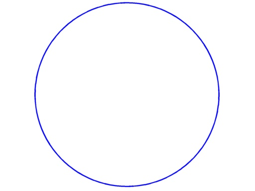 |
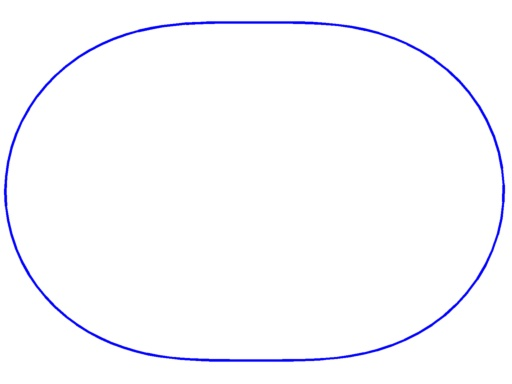 |
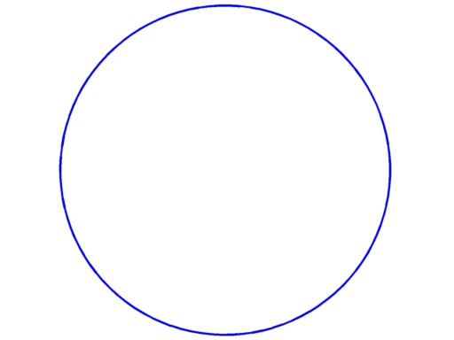 |
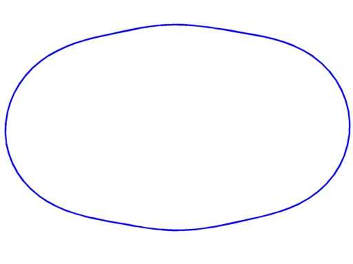 |
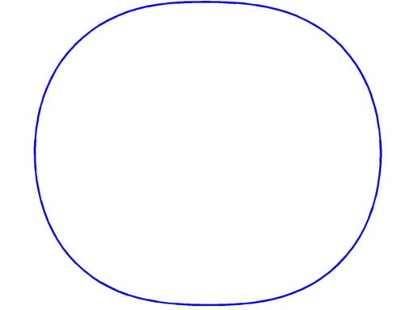 |
$\lambda_1+Per = 11.55$ multiplicity $1$ |
$\lambda_2+Per = 15.28$ multiplicity $1$ |
$\lambda_3+Per = 15.75$ multiplicity $2$ |
$\lambda_4+Per = 18.34$ multiplicity $2$ |
$\lambda_5+Per = 19.10$ multiplicity $2$ |
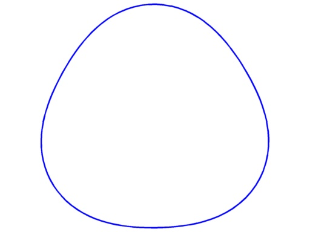 |
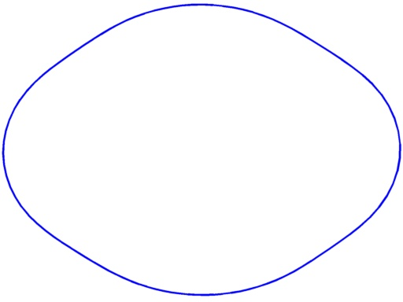 |
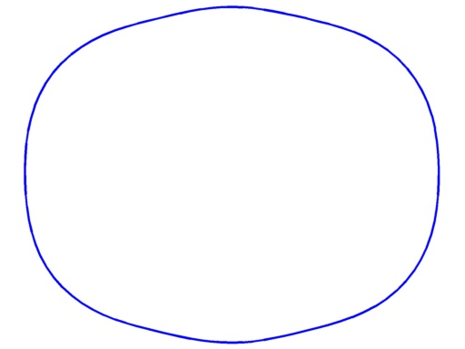 |
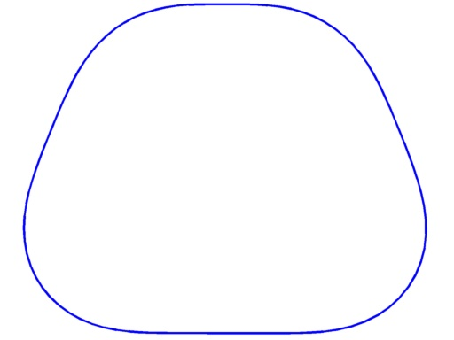 |
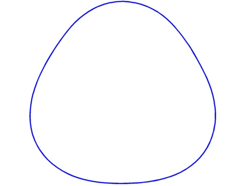 |
$\lambda_6+Per = 20.09$ multiplicity $1$ |
$\lambda_7+Per = 21.50$ multiplicity $2$ |
$\lambda_8+Per = 22.02$ multiplicity $2$ |
$\lambda_9+Per = 23.20$ multiplicity $1$ |
$\lambda_{10}+Per = 23.55$ multiplicity $2$ |
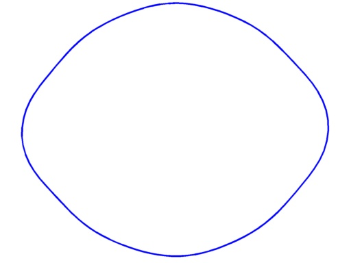 |
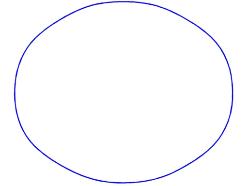 |
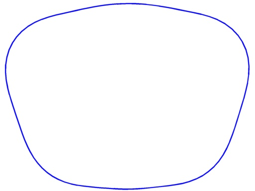 |
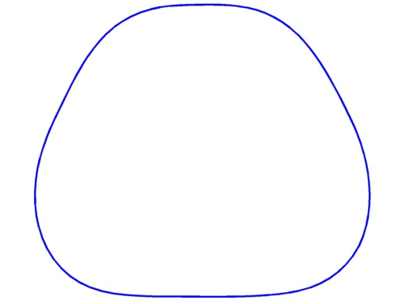 |
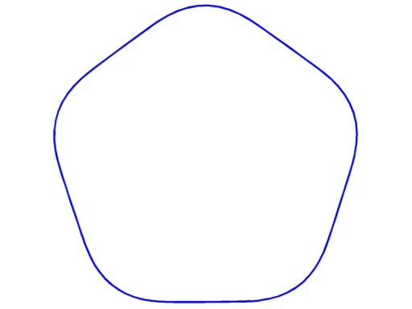 |
$\lambda_{11}+Per =24.59$ multiplicity $2$ |
$\lambda_{12}+Per =24.74$ multiplicity $3$ |
$\lambda_{13}+Per =25.98$ multiplicity $1$ |
$\lambda_{14}+Per =26.43$ multiplicity $2$ |
$\lambda_{15}+Per =26.91$ multiplicity $1$ |
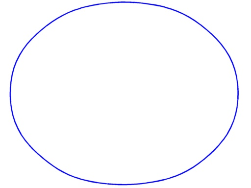 |
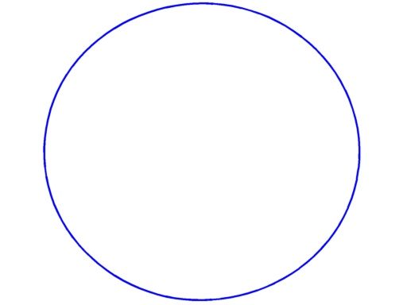 |
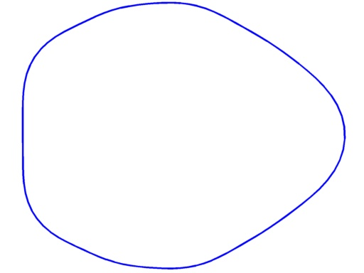 |
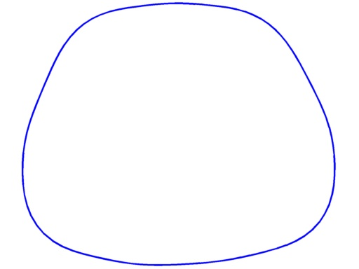 |
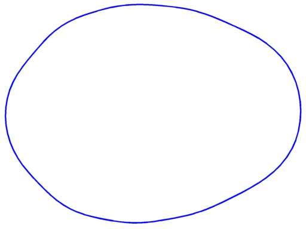 |
$\lambda_{16}+Per =27.25$ multiplicity $3$ |
$\lambda_{17}+Per =27.36$ multiplicity $3$ |
$\lambda_{18}+Per =28.62$ multiplicity $2$ |
$\lambda_{19}+Per =29.07$ multiplicity $2$ |
$\lambda_{20}+Per =29.51$ multiplicity $3$ |
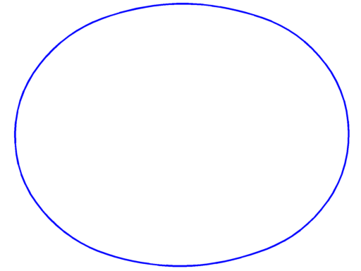 |
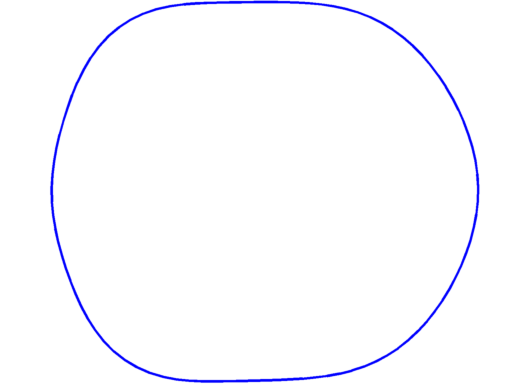 |
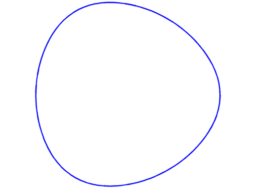 |
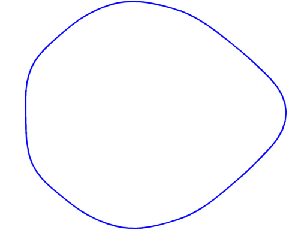 |
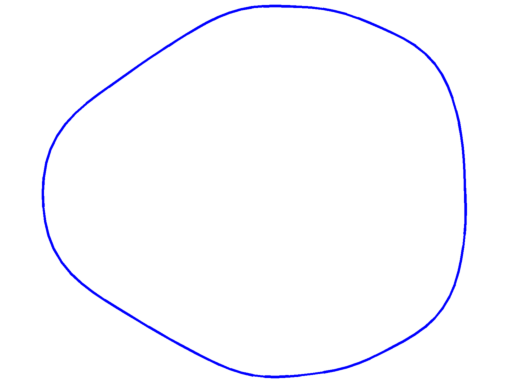 |
$\lambda_{21}+Per =29.62$ multiplicity $3$ |
$\lambda_{22}+Per =29.94$ multiplicity $2$ |
$\lambda_{23}+Per =30.19$ multiplicity $4$ |
$\lambda_{24}+Per =31.3$ multiplicity $2$ |
$\lambda_{25} =31.5$ multiplicity $3$ |
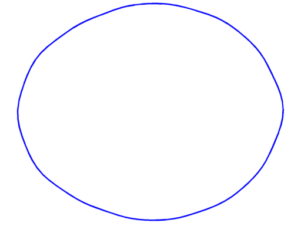 |
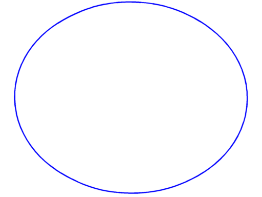 |
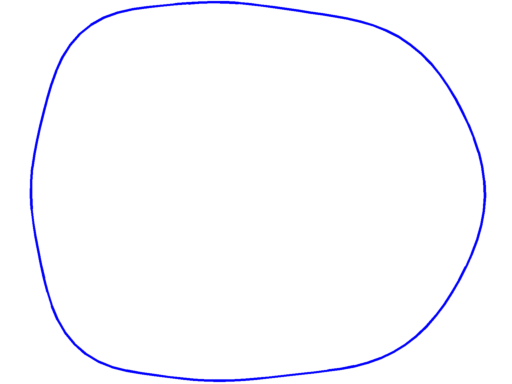 |
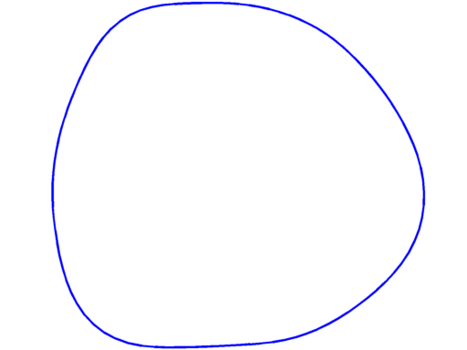 |
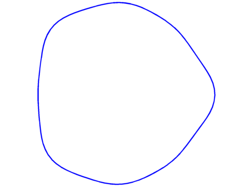 |
$\lambda_{26}+Per =31.88$ multiplicity $3$ |
$\lambda_{27}+Per =31.91$ multiplicity $4$ |
$\lambda_{28}+Per =32.48$ multiplicity $3$ |
$\lambda_{29}+Per =32.85$ multiplicity $3$ |
$\lambda_{30}+Per =33.26$ multiplicity $3$ |
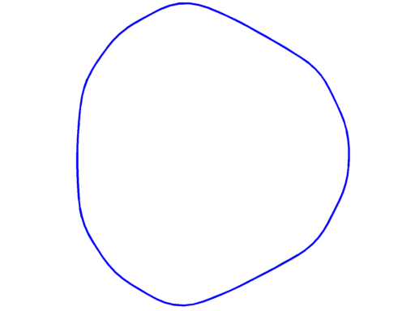 |
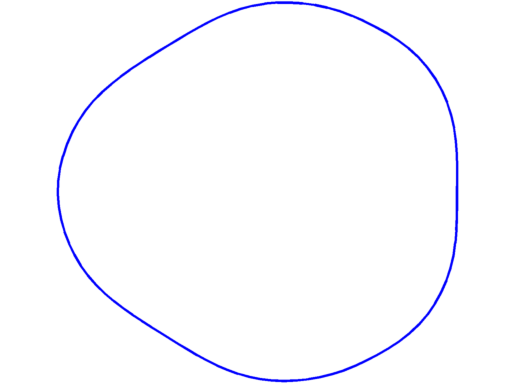 |
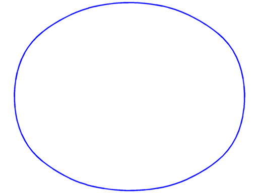 |
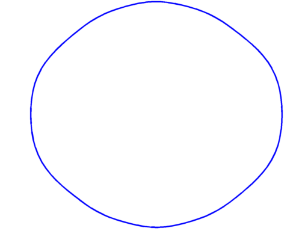 |
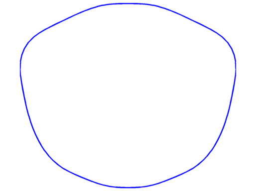 |
$\lambda_{31}+Per =33.82$ multiplicity $2$ |
$\lambda_{32}+Per =33.89$ multiplicity $3$ |
$\lambda_{33}+Per =34.09$ multiplicity $4$ |
$\lambda_{34}+Per =34.23$ multiplicity $3$ |
$\lambda_{35}+Per =34.94$ multiplicity $3$ |
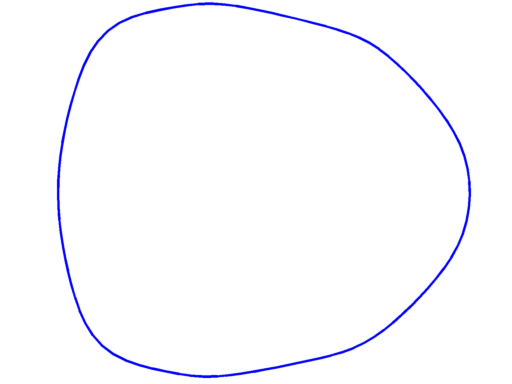 |
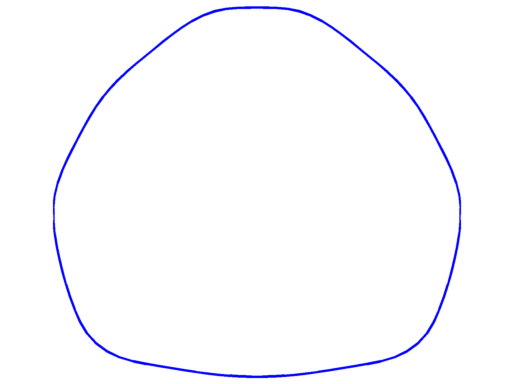 |
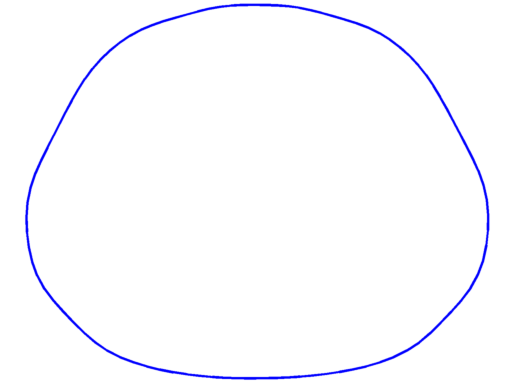 |
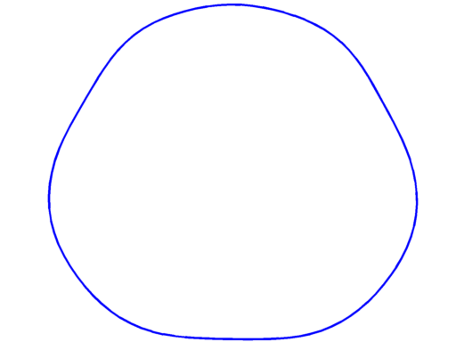 |
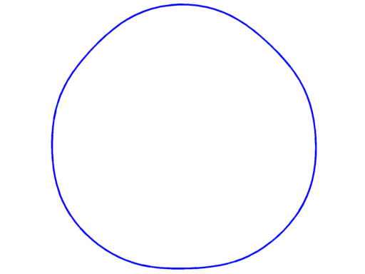 |
$\lambda_{36}+Per =35.28$ multiplicity $3$ |
$\lambda_{37}+Per =35.71$ multiplicity $3$ |
$\lambda_{38}+Per =35.98$ multiplicity $2$ |
$\lambda_{39}+Per =36.06$ multiplicity $3$ |
$\lambda_{40}+Per =36.16$ multiplicity $4$ |
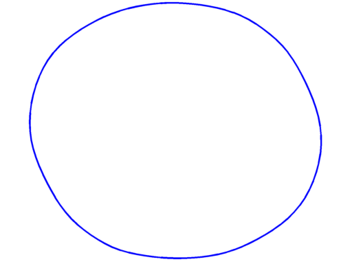 |
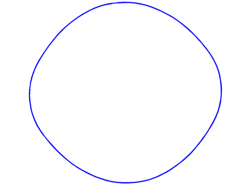 |
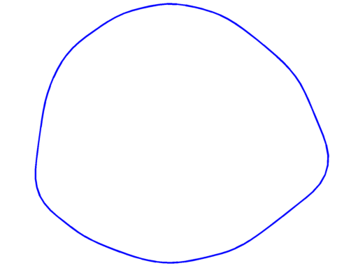 |
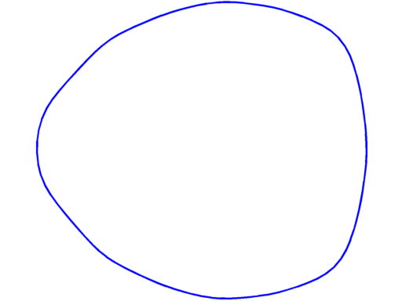 |
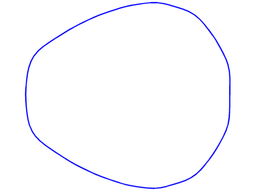 |
$\lambda_{41}+Per =36.53$ multiplicity $3$ |
$\lambda_{42}+Per =36.60$ multiplicity $3$ |
$\lambda_{43}+Per =37.37$ multiplicity $3$ |
$\lambda_{44}+Per =37.57$ multiplicity $4$ |
$\lambda_{45}+Per =37.92$ multiplicity $3$ |
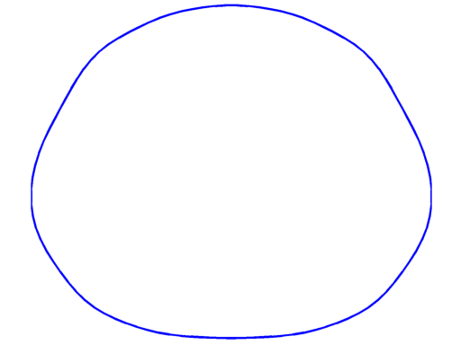 |
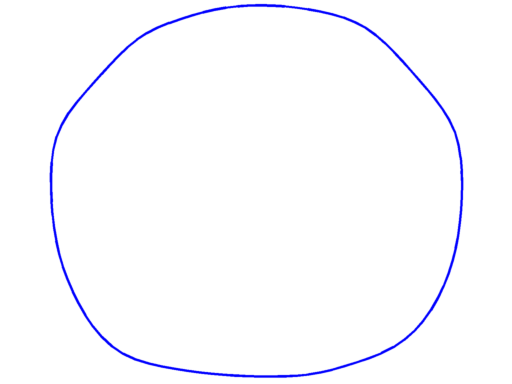 |
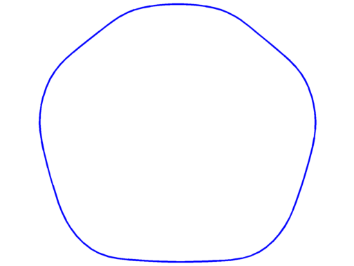 |
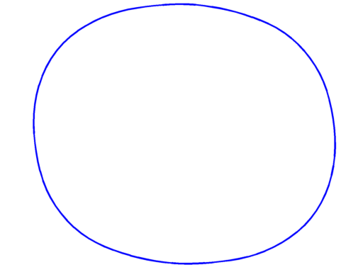 |
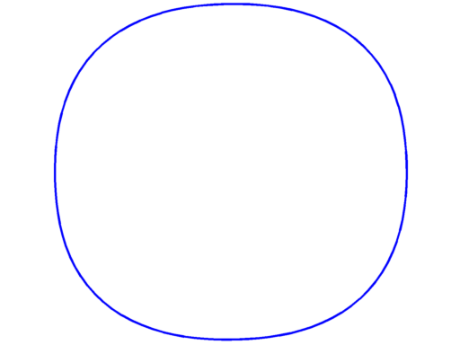 |
$\lambda_{46}+Per =38.08$ multiplicity $3$ |
$\lambda_{47}+Per =38.30$ multiplicity $3$ |
$\lambda_{48}+Per =38.49$ multiplicity $4$ |
$\lambda_{49}+Per =38.70$ multiplicity $3$ |
$\lambda_{50}+Per =38.80$ multiplicity $3$ |
← Back to numerical computations
Created: Dec 2014, Last modified: 16 Feb 2015